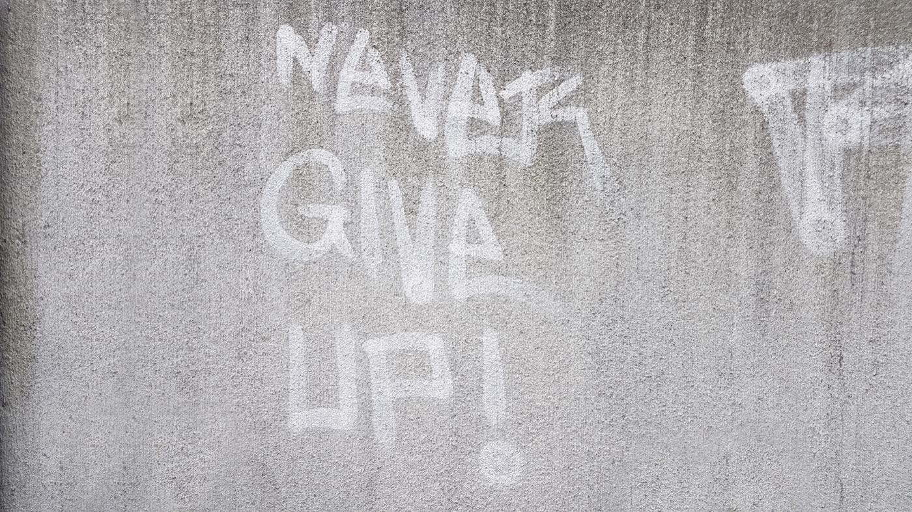
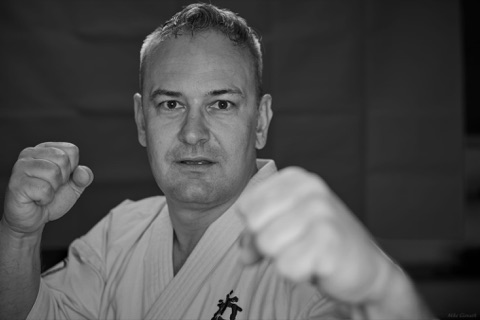
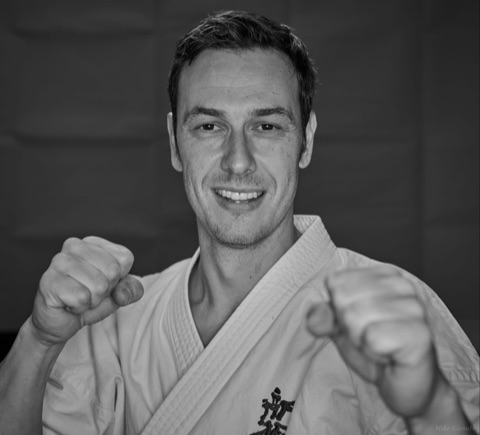
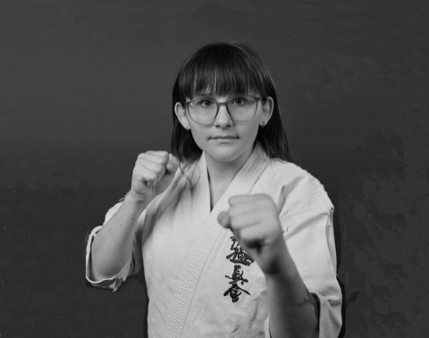
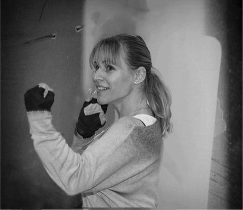

Hinotori-Dojo
Shinkyokushinkai Karate in Mels. Für Kinder, Jugendliche und Erwachsene.
Wie ein Phönix aus der Asche – immer wieder neu zu den eigenen Stärken zurückkehren.
- Erfahrung im Team
- 100+ Jahre Kampfsport
- Trainings
- 5 pro Woche
- Verband
- SSKA EKO und WKO
Willkommen
im Hinotori-Dojo
Herzlichen Dank für den Besuch auf unserer Website, wir freuen uns, dass du mehr über uns erfahren möchtest. Hinotori - auf japanisch der Feuervogel / Phönix - ist der Namensträger unseres Dojos. Diese Symbolfigur steht dafür, immer wieder neu zu seinen eigenen Stärken zurückzukehren, neue Fähigkeiten zu finden und aus ihnen frisch gestärkt hervor zu treten. Nach einer Niederlage wieder aufstehen, aus Fehlern lernen, etwas verloren Geglaubtes erscheint wieder in neuem Glanz. Die Sonne dient als Grundlage für das Leben und das Feuer ein Symbol von Reinigung sowie Erneuerung - aus Feuer und Asche entstehen mit der Zeit blühende Landschaften.
Osu.
Karate und der Weg des Zen
Karate ist mehr als Kampfsport. Es schult Körper und Geist gleichermassen. Zwei Symbole begleiten uns dabei auf diesem Weg.
„Suche nicht nach der Wahrheit, sondern trenne dich von deinen Meinungen.“
Die Philosophie des Karate ist eng mit dem Zen verwandt: Beide streben nach Vollkommenheit, Harmonie und Selbstbeherrschung. Wer Selbstbewusstsein aufbaut, kann Aufregung, Stress und Gewalt vermeiden.
Trainingszeiten
Der heutige Tag ist markiert. Jedes Training ist offen für ein Probetraining.
Hinotori-DojoBahnhofstrasse 97
8887 Mels / Heiligkreuz Route in Google Maps öffnen
- MontagShinkyokushin Aerobic
- DienstagShinkyokushinkai Karate
- MittwochTurnier- und Prüfungsvorbereitung
- DonnerstagKumite, Kampftraining
- FreitagKindertraining
One Team – One Vision
Bescheidenheit, Ehrlichkeit, Kollegialität, Gerechtigkeit, gegenseitiger Respekt, Disziplin, Höflichkeit, Leidenschaft, Konzentration, Leistung, Motivation, Weisheit, Tapferkeit, Selbstvertrauen, Zielstrebigkeit, Strebsamkeit, Rücksicht.

Unser Motto
Hinfallen. Aufstehen. Weitermachen – wie der Phönix.
Vorstand und Instruktoren
-

Peter Raghias
Präsident, Instruktor Kindertraining
1. Dan, J+S Leiter Karate Jugend und Kindersport. Karate seit 1990.
-
Melvin Sassi
Vizepräsident, Materialchef, Kumite
2. Dan, Instruktor Kumite und Kampftraining, Selfdefence Instruktor. Karate seit 2001.
-

Mauro Raghias
Kassier, Instruktor Kindertraining
1. Dan, J+S Leiter Jugendsport, Technik und Kata. Karate seit 1992.
-

Sereina Gienuth
Beisitzerin
3. Kyu, Mitglied des Vorstands.
-

Corina Gienuth
Instruktorin Aerobic
4. Kyu. Karate seit 1997.
-
Carlo Raghias
Aktuar
4. Kyu, Ansprechperson für Anmeldungen. Karate seit 2010.
Impressionen aus dem Dojo
Training, Turniere und Events: Schau dir an, wie es bei uns zugeht.
Komm vorbei und probier es aus
Schnuppern ist jederzeit möglich. Schreib dem Aktuar, welches Training dich interessiert.
Was nehme ich mit?
- Bequeme Sportkleidung
- Etwas zu trinken
- Keine Hallenschuhe nötig – im Dojo trainieren wir barfuss
Kontakt zum Vorstand
- Aktuar (Anmeldungen)aktuar@hinotori.ch
- Präsidentpraesident@hinotori.ch
- Vizepräsidentvizepraesident@hinotori.ch
- Kassierkassier@hinotori.ch
- Materialchefmaterialchef@hinotori.ch